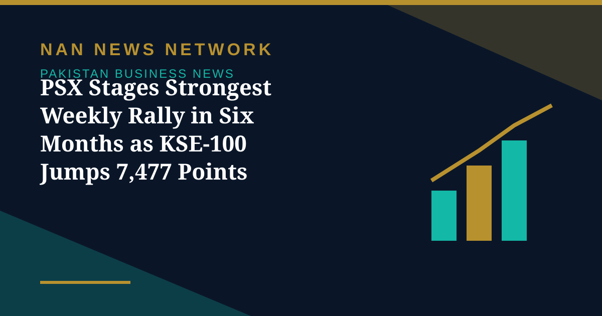

PSX Stages Strongest Weekly Rally in Six Months as KSE-100 Jumps 7,477 Points

The Pakistan Stock Exchange (PSX) recorded its strongest weekly rally in nearly six months, with the benchmark KSE-100 Index surging 7,477.44 points, or 4.5 percent week-on-week, to close at 173,886.69 points, Business Recorder reported on November 9.
Oil's slide did the heavy lifting
A sharp decline in international oil prices following Iran's reported openness to diplomatic talks to end the ongoing war eased concerns over domestic inflation and external account pressures, encouraging investors to return to equities and triggering broad-based buying. Brent crude closed at $98.50 per barrel, compared with the previous week's average of approximately $115.50 per barrel. The reduction in international oil prices was also reflected in domestic petroleum prices: the government reduced petrol by Rs25.32 per litre to Rs352.59 and high-speed diesel by Rs20.71 to Rs382.25, according to Business Recorder.
Inflation eased too
On the macroeconomic front, inflation measured by the Consumer Price Index slowed to 9.6 percent year-on-year in October, down from 10.3 percent in September, although it remained significantly higher than the 6.25 percent recorded in October last year, Dawn reported. Oil production rebounded 8.9 percent week-on-week to 64,700 barrels per day, mainly because of the restoration of output from northern fields. The index had closed the previous week at 166,409 points, according to Arif Habib Ltd.
Sources: Business Recorder, November 9, 2026; Dawn, November 8, 2026
More on Pakistan Business News
- Gold Steady at Rs429,136 a Tola as PSX Stays Shut for Iqbal Day
- PSX Stages Strongest Weekly Rally in Six Months as KSE-100 Jumps 7,477 Points
- Gold Falls Rs6,500 a Tola to Rs429,136 as Rupee Holds at Rs276.66
- Trade Deficit Widens 16% to $14.6 Billion as Imports Hit $26 Billion in July-October
- Petrol Price Cut by Rs6.59 to Rs346 a Litre in Fifth Straight Reduction
- PSX Snaps Four-Day Rally as KSE-100 Falls 1,493 Points to 173,887 on Profit-Taking
- Pakistan's External Debt Nearly Doubles to $135.1 Billion in a Decade, World Bank Reports
- PSX Closes at Record 175,380 as KSE-100 Gains 3,366 Points for a Second Day
- ABHI Microfinance Bank IPO Book-Building Opens Today, Bidding Runs November 5-6
- PSX Surges 3,995 Points to Close Above 172,000 on Geopolitical Optimism
- Pakistan Ranks 106th on 2026 Global Hunger Index as Report Questions Budget Priorities
- PSX Gains 1,454 Points to Close at 168,018 on Renewed Buying in Heavyweights
- Pakistan's First SPAC Deal Brings Solar Firm Ningbo Green Light Energy to the PSX
- PSX Recovers 155 Points to Close at 166,564 as Oil Prices Ease
- PSX in October: KSE-100 Fell 3,560 Points as War Fears and a Rate Hike Weighed
- Pakistan's Refineries Report 1,860% Profit Jump as War-Driven Margins Surge
- ABHI Microfinance Bank Plans Up to Rs3 Billion PSX IPO, Book-Building on November 5-6
- PSX Ends Four-Session Rally as Oil Surge Triggers Profit-Taking, Index Closes at 166,409
- Pakistan Cement Makers' Profits Rise 17% to Rs34.2 Billion in First Quarter of FY27
- Pakistan's Exports Rise 7.7% to $8.5 Billion but Trade Gap Widens in First Quarter
- SIFC Finalises 38 Projects Targeting $40 Billion in Investment, Senate Panel Told
- PSX Extends Recovery as KSE-100 Closes Above 167,000 on October 29
- Petrol, Diesel Prices Rise From October 29 as Government Revises Fuel Rates
- KSE-100 Gains 1,269 Points to Close Above 165,700
- Fauji Fertilizer's Nine-Month Profit Hits Rs71 Billion on Strong Urea Demand
- KSE-100 Climbs 1,428 Points to Close at 164,467 in Bullish Session
- Pakistan Signs $2.25 Billion Deal for Lithium Battery Gigafactory in Rawalpindi
- Gold Prices Rise by Rs1,400 per Tola in Pakistan on Monday
- Business Confidence Falls to 48 in October, State Bank Survey Shows
- Diesel Raised to Rs393.66 a Litre, Petrol Unchanged at Rs377.71
- FBR Activates Faceless Tax Audit System From October 15
- Pakistan-Iran Trade Disruption Puts $2.8 Billion Annual Trade at Stake